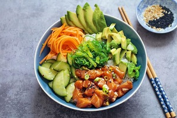

Spring Break
arroz integral, camarones, aguacate, calabacin, col lombarda, remolacha roja , aceite, sal y limon, spring dressing, brotes de puerro, sesamo

arroz integral, camarones, aguacate, calabacin, col lombarda, remolacha roja , aceite, sal y limon, spring dressing, brotes de puerro, sesamo
Pan integral de centeno, Aguacate, queso feta, chile, semilla se sesamo
Acai , Mango, Pina, Coco, Granola, Miel organica
Acai, Platano, frambuesa, Almendras, Chips de chocolate, Mantequilla de frutos secos organicos.